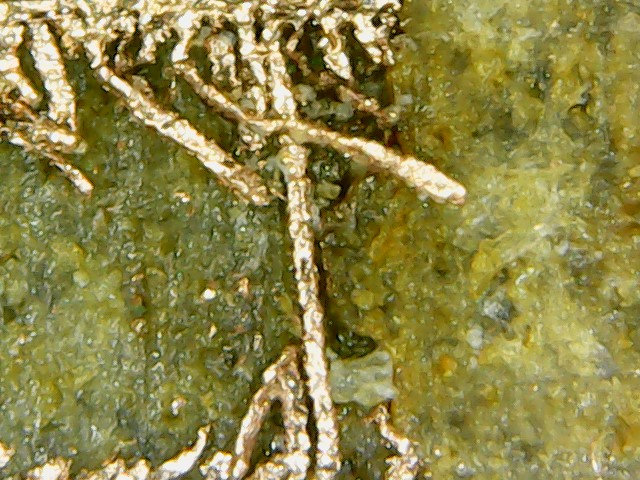

Electronic production
MISSION: produce a pcb and solder some component on it, the FabISP
The weekly assignment is to fabricate a the fabISP ( a serial programmer for the microcontroller, used in the other lesson to program the atmel chip), and is also a way to learn how to produce and fabricate printed circuit board (pcb) in order to make custom circuit for solder the electronic on.
There are a several way to make PCB:
-acid based reagent to etching the copper
-milling machine for PCB
-laser based engraving
There are also various type of PCB board to be engraved,milled or etched:
-FR4 glass-reinforced epoxy laminate sheets
-FR1 cellulose based
-flexy PCB laminate
-full epoxy laminate
-etc
The FR4 and other glass based pcb are not much compatible whit the milling process because it free some micro-dust of glass that are dangerous if inhalated, so we decide to use paper based pcb FR1.
(to be honest this experimentation was not made on pupose, because i make the support on cura but i forget to set the right overhang angle).
In our lab we had some issue whit the milling machine ( who come whit a damaged electronic board and so it doesn't work), for this reason we experiment a combined flexx and co2 laser machine from Trotec.
We experiment various type of combination because we have to set the flexx laser frequency and the dpi setting of the machine, Also the power, the speed, the type of working process (raster, vector, engraving), the
number of "loop" for the whole process.
After some experimentation done, we notice that some micro wire of copper remain in between the traces so them make short circuit inside the board ( and it in not so good for the pcb design).
Using a digital microscope we can observe the short circuit made by melted or vaporized copper not totally removed from the laser.

For this reason we play aground some setting of the flexx laser setting them to 20 MHz and also set the DPI of the laser to be 1000 instead of 500, because we noticed the edge of the corner are not really sharp enough.
After this change we noticed a real change in the final result, the traced are really well separated and the edge are really sharp and clean
At difference between a milling process, the laser is more precise and it will make possible to have thinner traces that can be put between component or between other things allowing the pcb to be smaller and concentrated.
Passing to the soldering process i experiment my rework station and try to solder whit hot air gun for smd process.
I have to practice in this process because is very important to put the right quantity of soldering paste ( a mixture of soldering rosin and atomized tin); if you put too much it will go on other traces and pad and make short circuit, if you didn't put enough it will not solder the component.
In this process is not really important a precise positioning of the component, because when the thin become in liquid state the superficial tension of the liquid will attract the pin to the pad and make all in place
You have also to consider to not heat for very long time the component or it will be damaged.
So a good rules is to count 10 second and after punt the air gun away, and if is not properly solder, wait some time and repeat the process.
The circuit comes out well and well soldered
We had some problem during the programming of the board because the "first" fabISP doesn't work properly,
but after the "flashing" the first one whit a pickit2 we program the other whit a FabISP.
Here the text of the programming made whit command line using avr-gcc and the avrdude.
(for more information about avrdude and avr-gcc see lessono 7 embedded programming).
Simone@ZIMOX:fabISP.0.8.2_firmware ZIMOX$ sudo make fuse
Password:
avrdude -c stk500v1 -P /dev/tty.usbmodem1421 -b19200 -p attiny44 -U hfuse:w:0xDF:m -U lfuse:w:0xFF:m
avrdude: AVR device initialized and ready to accept instructions
Reading | ################################################## | 100% 0.06s
avrdude: Device signature = 0x1e9207
avrdude: reading input file "0xDF"
avrdude: writing hfuse (1 bytes):
Writing | ################################################## | 100% 0.02s
avrdude: 1 bytes of hfuse written
avrdude: verifying hfuse memory against 0xDF:
avrdude: load data hfuse data from input file 0xDF:
avrdude: input file 0xDF contains 1 bytes
avrdude: reading on-chip hfuse data:
Reading | ################################################## | 100% 0.02s
avrdude: verifying ...
avrdude: 1 bytes of hfuse verified
avrdude: reading input file "0xFF"
avrdude: writing lfuse (1 bytes):
Writing | ################################################## | 100% 0.06s
avrdude: 1 bytes of lfuse written
avrdude: verifying lfuse memory against 0xFF:
avrdude: load data lfuse data from input file 0xFF:
avrdude: input file 0xFF contains 1 bytes
avrdude: reading on-chip lfuse data:
Reading | ################################################## | 100% 0.02s
avrdude: verifying ...
avrdude: 1 bytes of lfuse verified
avrdude: safemode: Fuses OK (E:FF, H:DF, L:FF)
avrdude done. Thank you.
Simone@ZIMOX:fabISP.0.8.2_firmware ZIMOX$ sudo make program
avrdude -c stk500v1 -P /dev/tty.usbmodem1421 -b19200 -p attiny44 -U flash:w:main.hex:i
avrdude: AVR device initialized and ready to accept instructions
Reading | ################################################## | 100% 0.05s
avrdude: Device signature = 0x1e9207
avrdude: NOTE: "flash" memory has been specified, an erase cycle will be performed
To disable this feature, specify the -D option.
avrdude: erasing chip
avrdude: reading input file "main.hex"
avrdude: writing flash (1988 bytes):
Writing | ################################################## | 100% 3.39s
avrdude: 1988 bytes of flash written
avrdude: verifying flash memory against main.hex:
avrdude: load data flash data from input file main.hex:
avrdude: input file main.hex contains 1988 bytes
avrdude: reading on-chip flash data:
Reading | ################################################## | 100% 2.26s
avrdude: verifying ...
avrdude: 1988 bytes of flash verified
avrdude: safemode: Fuses OK (E:FF, H:DF, L:FF)
avrdude done. Thank you.
avrdude -c stk500v1 -P /dev/tty.usbmodem1421 -b19200 -p attiny44 -U hfuse:w:0xDF:m -U lfuse:w:0xFF:m
avrdude: AVR device initialized and ready to accept instructions
Reading | ################################################## | 100% 0.05s
avrdude: Device signature = 0x1e9207
avrdude: reading input file "0xDF"
avrdude: writing hfuse (1 bytes):
Writing | ################################################## | 100% 0.02s
avrdude: 1 bytes of hfuse written
avrdude: verifying hfuse memory against 0xDF:
avrdude: load data hfuse data from input file 0xDF:
avrdude: input file 0xDF contains 1 bytes
avrdude: reading on-chip hfuse data:
Reading | ################################################## | 100% 0.02s
avrdude: verifying ...
avrdude: 1 bytes of hfuse verified
avrdude: reading input file "0xFF"
avrdude: writing lfuse (1 bytes):
Writing | ################################################## | 100% 0.02s
avrdude: 1 bytes of lfuse written
avrdude: verifying lfuse memory against 0xFF:
avrdude: load data lfuse data from input file 0xFF:
avrdude: input file 0xFF contains 1 bytes
avrdude: reading on-chip lfuse data:
Reading | ################################################## | 100% 0.02s
avrdude: verifying ...
avrdude: 1 bytes of lfuse verified
avrdude: safemode: Fuses OK (E:FF, H:DF, L:FF)
avrdude done. Thank you.
After we flash the firmware in the board we have to remove a connection made between to pad and also remove a 0 ohm resistor to make not possible the rewriting of the firmware.
In this way we protect the fabISP from incorrect operation of writing a firmware